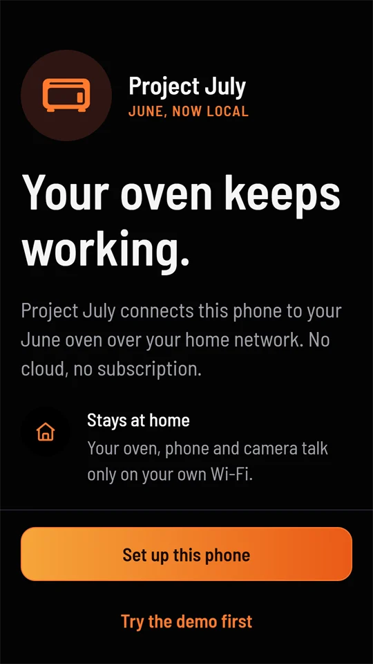
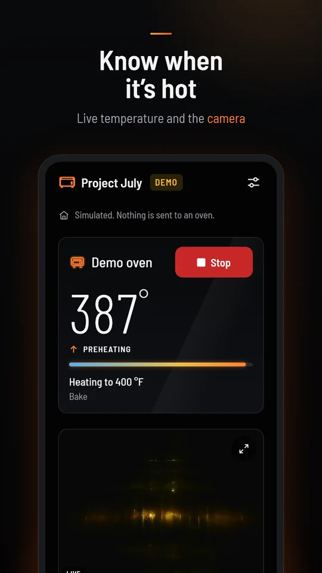
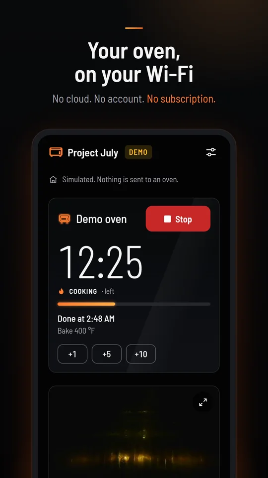
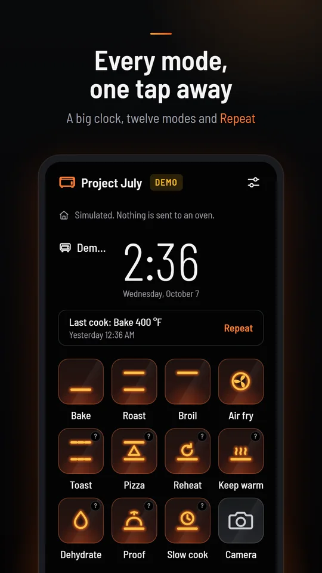
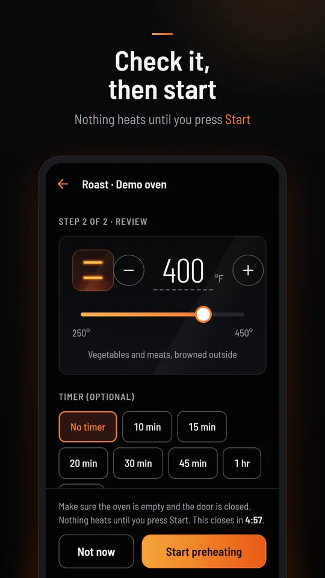
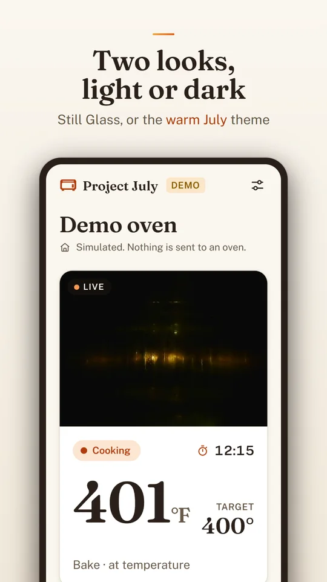

Your oven, on your Wi‑Fi
Preheat, set a timer, watch the camera and stop a cook from your phone. The app talks straight to your June oven over your home network. There's no cloud, no account and no subscription.

Get Project July for Android
Project July is in beta on Google Play. Use the same Google account that's on your phone for all three steps. The group is also where testers ask questions, share feedback and hear about new builds.
- Join the beta groupOpen Project July Beta on Google Groups and select Join group.
- Become a testerOpen the testing page on Google Play and select Become a tester.
- InstallOpen Project July on Google Play and install it.
- Try it, then tell usNo oven yet? Tap Try the demo first in the app. Then set it up with your oven, and report anything odd in the group.
A June oven on Project July
The app doesn't use June's servers, so it only works with an oven that runs the Project July local server.
- An oven with Project July installedDone once, with a USB stick. The setup guide walks through it.
- Your phone on the same Wi‑FiThe app finds the oven on your home network. It doesn't work away from home.
- An Android phone with Google PlayAny phone that can install apps from Google Play.
No oven yet, or just curious? Tap Try the demo first on the welcome screen. The demo oven is simulated and always labelled Demo, and nothing is sent to a real oven.
Already use Home Assistant? The July Oven card gives you the same controls on your dashboard, and both can be used at once.
This is a new app, not the patched June app that comes with the installer. That one is described on the clients page.
Find the oven, type a code, done
You pair each phone once. After that it reconnects on its own whenever you're home.

- Set up this phoneThe app looks for the oven on your Wi‑Fi. If it doesn't find it, type the oven's address. The installer names it
june.local. Give your phone a name the oven will show. - Type the code on the ovenThe app shows an eight-digit code. On the oven, open Connect and type it in before the countdown ends.
- Allow remote startOn the oven, open Settings › App permissions so the app can start cooks. Stopping always works.
Secure connection
Every command is signed by your phone, and the oven only obeys phones it has paired with. The app also comes with the standard install's certificate, so with june.local, june2.local or june3.local the connection is encrypted and checked with nothing to set up.
After a custom install, add your home's certificate, ca.crt from the installer, under Home certificate when you set up, or later in Settings › Connection. If the app can't check the certificate, for example when you type the IP address after a standard install, it uses the oven's plain port 80 and says so.
Several ovens
A phone can pair with more than one oven. Each one gets its own page, and you swipe between them (or tap the dots under the top bar). Add another from Settings › Ovens › Add another oven.
Made to read from across the kitchen
The default look, Still Glass, matches the oven's own black glass and the Home Assistant card: one big number, one red Stop.

Every mode, one tap away
When the oven is off, the app shows the oven's home screen: a big clock, your last cook with Repeat, and glowing tiles drawn the way the oven draws them.
Modes marked ? haven't been started on a real oven yet. In Settings you can put your most-used modes first and switch to a 24-hour clock.
Check it, then start
Nothing heats on one tap. Every mode opens a review: drag the slider, use − and +, or tap the number and type it. Pick a timer if you want one, then press Start preheating.
The review reminds you to check the oven is empty and the door is closed, and it closes itself after 5 minutes if you don't start.


One big number, one red Stop
- Preheating shows the temperature climbing, with an arrow, and the heat line filling up.
- Ready turns green with a check. Put the food in.
- With a timer, the big number is the time left, with the clock time it will be done and +1, +5 and +10 minute buttons.
- With the probe in, it's the food temperature and its target.
- Stop is always top right, always red, and never asks "are you sure".
A window into the oven
While the oven is on, the camera gets its own tile under the oven. Open it full screen to watch the food cook. The oven's camera sends about one picture a second.
Save puts the picture you're looking at in your phone's photos, and Share opens Android's share menu. The app only does either when you tap it.





When something looks off
Not covered here? Ask in the Project July Beta group, where other testers and the developers can help. You can also email hello@project-july.org.
The app doesn't find my oven
Check that the phone is on your home Wi‑Fi, not mobile data or a guest network, and that the oven shows it's connected. Then type the address yourself: june.local, or the oven's IP address from your router.
If the address works in the phone's browser (it opens june-local's status page) but not in the app, post in the Project July Beta group.
The code ran out before I typed it
Go back and start pairing again for a fresh code. Open the oven's Connect screen first, so it's ready when the code appears.
The oven won't start from the app
The app says why in plain words. Most often:
- Remote start is off. On the oven, open Settings › App permissions and turn it on.
- The door is open, or there's food or a probe inside. Close it, or take it out before preheating.
- The mode is marked ?, and the oven may not start that one from a phone yet. Start it on the oven.
It says it's using the plain port
The app couldn't check the oven's certificate. Commands are still signed and only paired phones are obeyed, but the link isn't encrypted. After a standard install, use june.local (or june2.local, june3.local) as the address instead of the IP. After a custom install, add ca.crt under Settings › Connection › Home certificate. Then check the connection again.
The Play Store says I'm not a tester
Join the beta group with the Google account your phone uses, wait a few minutes, then open the testing page again and select Become a tester. If you have several Google accounts on the phone, switch to that one in the Play Store.
How do I leave the beta?
On the testing page, select Leave the program, then uninstall the app. You can also leave the Google group.
Your oven stays at home
- No account, no ads, no analytics and no tracking.
- The app talks to your oven over your home network. Nothing about your oven or your cooking is sent to us, to June or to anyone else.
- Pairing keys and settings stay on your phone, in Android's secure storage.
- Camera pictures are only saved or shared when you tap Save or Share.
- To get app updates, the app asks Expo's update service whether there's a new version. That check sends a random installation ID, not linked to you or your oven.
- The app is open source, so you can check all of this yourself: the code is on GitHub.